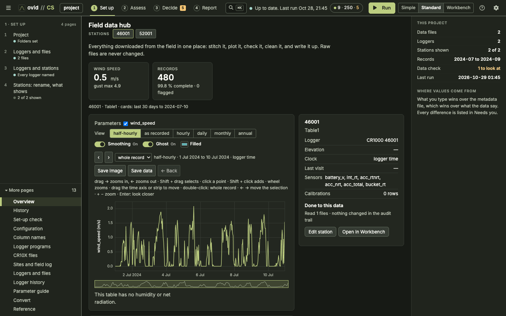
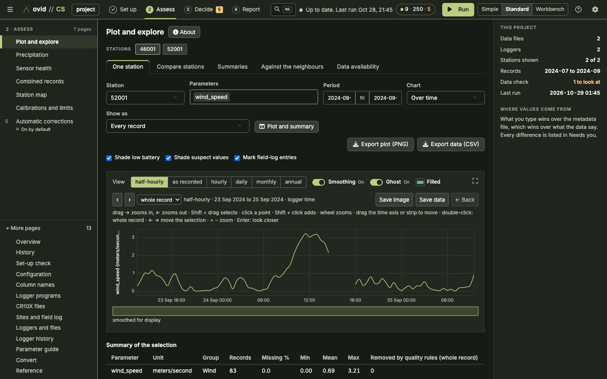
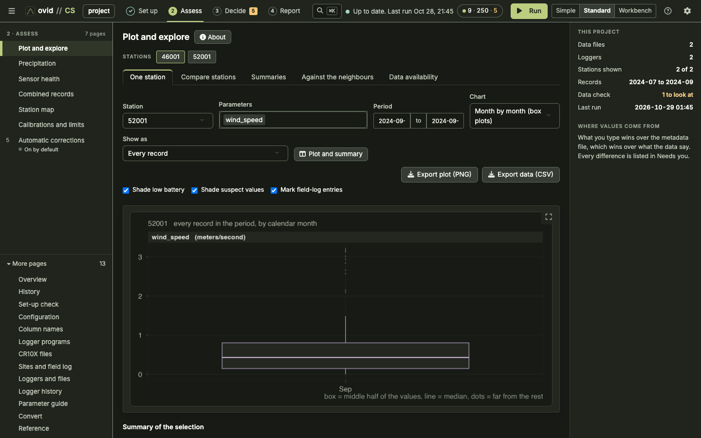

ovid CS Reference Guide
Campbell Scientific loggers: what the app does to every record, why, and how to check it. For CS 1.11.0 (ovid Core 1.15.0). Settings are quoted with their defaults; change them in the app or at the top of cs_pipeline.R. Raw files are never changed.
Quick start
- Collect the raw
.datfiles (TOA5 from LoggerNet, PC400 or CardConvert, TOB3 binary straight from a card or the logger's CPU, and CR10X mixed-array files) in one or more raw folders. Subfolders are searched. Keep every download, including overlapping ones: the app sorts them out. - Open the app (
Open CS (Mac).command,Ovid_CS.baton Windows, orshiny::runApp()) and choose the raw folders and a project folder with Browse….config/andoutput/are kept in the project folder. - Run the Set-up check. Fix anything it lists in red first.
- Press Run. The first run writes the set-up tables in
config/with the built-in defaults. - For CR10X files, open CR10X files and give each file a logger id and its Edlog
.FSLfile, so the columns get names. - On Stations, give each logger a station name. Split a logger by date if it moved, or set the station to
ignoreto set the logger aside: its files are then not read at all. - On Column names (aliases), check that each raw column maps to the common name you want. Unmapped columns keep their raw name.
- Read Clock checks. Add a clock correction (shift or remove) in the Workbench where a logger's clock was wrong, and run again.
- Check Quality rules and Sensor health. Add manual removals in the Workbench for periods you know are bad (a sensor down for repair, a bucket being serviced).
- For weighing gauges, check Gauge set-up and enter servicing in the Field log. Then look at the data in Plot and explore and export from Reports and export.
A run only rebuilds what changed (incremental = TRUE): a logger table whose files, clock corrections and settings are the same as last time is read back from cache/. Use Rescan on the Raw files page to make the app read particular files again.
What it looks like
The three screens you will use most, from a run on example data.



What happens to the data, in order
| # | Step | What changes | Logged in |
|---|---|---|---|
| 1 | Find files | Chooses which files are read; byte-identical copies, skipped tables and unreadable files are left out | audit/file_manifest.csv, audit/file_audit.csv |
| 2 | Read records | TOA5 header gives logger serial, model, program and table; spreadsheet dates rewritten as YYYY-MM-DD HH:MM:SS; CR10X arrays given time stamps and names | audit/file_manifest.csv, malformed_row entries |
| 3 | Clock fixes | Your shifts and removals applied; records before min_year (1995) or in the future dropped | audit/timestamp_checks.csv, audit trail |
| 4 | Numbers | NAN and blanks become missing; text in a numeric column removed | rule non_numeric |
| 5 | Stitch | One record per logger table: identical copies dropped, overlapping records merged (newest file wins) | stitched/, audit/gaps.csv, rules duplicate_record, overlap_conflict |
| 6 | Names | Raw columns renamed to common parameters (AirTC_Avg → air_temp) | audit/column_dictionary.csv |
| 7 | Stations | Records sent to stations (by logger, header name, table and date); overlaps between loggers merged | audit/lineage.csv, rule station_overlap |
| 8 | Calibrations | value × multiplier + offset, in place or into a new parameter | audit/calibrations_applied.csv |
| 9 | Removals | Overflow codes, values outside limits, spikes and your manual removals blanked | qc/*_removed.csv, audit/audit_index.csv |
| 10 | Flags | Doubtful values marked, not changed; each parameter given a health verdict | audit/flags.csv, audit/sensor_health.csv |
| 11 | Summaries | Adds VPD, albedo, net radiation, snow depth where possible; daily, monthly, water-year values | derived/, audit/derived_summary.csv |
| 12 | Gauges | Weighing-gauge bucket content turned into precipitation per interval and per day | precip/, audit/precip_summary.csv |
Nothing is dropped or blanked except through two functions that write to the audit trail. The run stops if records read = records kept + records dropped fails for a logger table, or if values before − values after = values audited fails for a station. audit/file_audit.csv repeats the record count per raw file.
The pipeline at a glance
Five stages, twelve steps. Inputs on the left enter at the step that uses them (all are tables in config/ except the raw folders); files on the right are written at the step that makes them.
One reading through the pipeline
CS has no real data in this guide, so the example comes from the synthetic test data the app is benchmarked on: eight CR1000 loggers, a 10-minute table, two years, with each monthly download also holding the month before (as real cumulative downloads do). The values are made up and the weather is not real; the processing is. The reading is logger 20001 at 12:00 on 15 July 2022.
In the raw file
The same line is in two downloads: …_2022-07.dat and …_2022-08.dat.
| Step | What happens to this reading | Value after the step |
|---|---|---|
| 1 Files | Both files start with TOA5; they differ (different MD5), so both are read. Table Table10min is not in skip_tables | 2 copies of the record |
| 2 Read | Serial 20001 in the header becomes the logger id (id_source = header serial). The time stamp is already ISO; it is kept as logged, with no time zone | 2022-07-15 12:00:00 |
| 3 Clock | No clock correction for this logger; 2022 is between 1995 and today | kept |
| 4 Numbers | Every field parses as a number; no NAN | AirTC_Avg = 13.61, RH = 48.5 … |
| 5 Stitch | Records sorted by time, newest file first. The 2022-07 copy is identical to the 2022-08 copy and is dropped (duplicate_record). Interval 10 min, no gaps | 1 record, source …_2022-08.dat |
| 6 Names | AirTC_Avg→air_temp, RH→rh, WS_ms_Avg→wind_speed, WindDir→wind_dir, Rain_mm_Tot→rain, SnowDepth_Avg→snow_depth, BattV_Min→battery_v_min, PTemp_C_Avg→panel_temp. SlrW_Avg and BP_mbar_Avg have no built-in alias and keep their names | air_temp = 13.61, rh = 48.5 |
| 7 Station | No row in stations.csv, so the station is the logger id and the stream is the table name | station 20001, stream Table10min |
| 8 Calibration | No calibration applies | unchanged |
| 9 Removals | No overflow code. air_temp inside −60 to 50, rh inside 0 to 105, wind_speed inside 0 to 75, wind_dir inside 0 to 360, battery inside 0 to 20. No flat run long enough | kept |
| 10 Flags | No second sensor to compare with; no sw_in (solar is still SlrW_Avg), so no night-sun check; the daily mean does not depart from the other 7 stations | no flag |
| 11 Summaries | VPD = 0.6108·e17.27·13.61/(13.61+237.3) × (1 − 0.485) = 1.5586 × 0.515. The day holds 144 of 144 records (needs 115.2): day mean air_temp 8.949 °C, rain 0.8 mm. July 2022: mean 8.751 °C, rain 18.6 mm | vpd_kpa = 0.8027 |
| 12 Gauges | No weighing-gauge columns, so nothing to do | — |
What the outputs look like
stations/20001__Table10min.csv (the clean record; logger_id, battery_v_min and panel_temp left out, source_file shortened):
| station | stream | TIMESTAMP | RECORD | air_temp | rh | wind_speed | wind_dir | SlrW_Avg | BP_mbar_Avg | rain | snow_depth | source_file |
|---|---|---|---|---|---|---|---|---|---|---|---|---|
| 20001 | Table10min | 2022-07-15 12:00:00 | 28152 | 13.61 | 48.5 | 4.78 | 138 | 322.2 | 903.8 | 0 | 0 | …_2022-08.dat |
derived/20001__Table10min_daily.csv:
| Date | records | air_temp | rh | wind_speed | wind_dir | SlrW_Avg | BP_mbar_Avg | rain | snow_depth | vpd_kpa |
|---|---|---|---|---|---|---|---|---|---|---|
| 2022-07-15 | 144 | 8.94924 | 69.2819 | 3.33097 | 171.958 | 101.967 | 899.892 | 0.8 | 0 | 0.35943 |
derived/20001__Table10min_water_year.csv (some rows):
| water_year | parameter | value | days_with_value | statistic | complete |
|---|---|---|---|---|---|
| 2022 | air_temp | −3.30686 | 273 | mean | FALSE |
| 2023 | air_temp | −5.99654 | 365 | mean | TRUE |
| 2022 | rain | 157.4 | 273 | total | FALSE |
| 2023 | rain | 221.6 | 365 | total | TRUE |
Water year 2022 runs 1 Oct 2021 to 30 Sep 2022; the data start on 1 Jan 2022, so it has 273 days and is incomplete (needs 0.8 × 365 = 292).
audit/file_audit.csv (the 2022-08 download): status ok, read 8,928, in output 4,464, dropped 4,464 (all duplicate_record: the July half was already in the July file), reconciles TRUE.
audit/metadata.csv: logger 20001, CR1000, program met.CR1, interval 10 min, 105,120 records from 2022-01-01 to 2023-12-31 23:50, 100% complete, 0 gaps, 24 files.
What the plots look like
Top: the traced reading (13.61 °C) among the day's 144 air temperatures; the dashed line is the day's mean in the daily file. Bottom: the solar column, still under its raw name because there is no alias for SlrW_Avg.
The synthetic air temperature follows a sine wave with noise; rain is 0.2 mm in about 2% of records. Real data will look less regular.
1. Finding files
Every file ending in .dat (any case) under the raw folders is listed; macOS ._ files are ignored. The first bytes decide the format.
| Status | Meaning | Read? |
|---|---|---|
ok | TOA5 (comma- or tab-separated), TOB3 binary, or a CR10X mixed-array file with import_cr10x = TRUE | yes |
duplicate_file | Byte-identical (same MD5) to another file; the newest copy is read | no |
skipped_table | Table in skip_tables: Public, Status, DataTableInfo, ts_data | no |
unsupported_binary_TOB | Binary TOB1/TOB2 (TOB3 is read); convert to TOA5 with CardConvert | no |
unsupported_mixed_array | Header-less CR10X file with import_cr10x = FALSE | no |
excluded_by_user | Left out by a row in file_rules.csv (Raw files page) | no |
empty_file, truncated_header, no_data_rows, unrecognised_format | Nothing usable | no |
TOB3 binary (CR1000, CR3000, CR6 card and CPU tables) is read directly: its ASCII header gives the same identity as TOA5 (plus a line of data types), and the data come from fixed-size frames, each stamped with seconds since 1990 and the first record number. Frames whose validation stamp does not match the file's are old or never written and are skipped. Tables in skip_tables (such as 10 Hz ts_data) are not loaded, but their first and last record times are still read so the Raw files page shows their date range.
Which logger a file belongs to
The TOA5 first line is "TOA5", station name, model, serial, OS, program, signature, table. The logger id is:
"TOA5","Met_45012","CR200X","No_SN",… → no serial, number 45012 in the name → logger id 45012, id_source "number in station name".2. Reading records and time stamps
TOA5 has four header lines (environment, column names, units, processing); the data start on line 5. Every field is read as text first. Repeated column names get _dup; extra unnamed trailing columns that are empty are dropped.
Dates that went through a spreadsheet
If the first 50 time stamps are not YYYY-MM-DD HH:MM:SS, each is tried against ISO forms, then d/m/y or m/d/y. Day-first is chosen when the first number exceeds 12 somewhere and the second never does; otherwise month-first, with a note in the Problems list when it cannot tell.
3/22/2010 16:00 → second number 22 > 12, so month/day → 2010-03-22 16:00:00.Time zone
Logger clocks carry no time zone. Times are kept exactly as logged and stored as UTC so that R never applies a daylight-saving shift. Only the night-sun check (section 10) uses utc_offset_hours from station_info.csv.
CR10X mixed-array files
Each line starts with an array id (e.g. 101). The most common field count per id makes table A101; another count seen 10 times or more makes A101_12f; other lines are logged as malformed_row. Names come from the .FSL given in cr10x.csv (same array id and field count); without one, columns are F02, F03… and the year, day and hhmm fields are guessed from their values.
101,2012,311,1430,-4.21,87.3 → year 2012, day 311, 14:30 → 2012-11-06 14:30:00, values in F05, F06 (or the FSL names). Printable-ASCII lines (01+0101. 02+2012. …) are rewritten as commas first.3. Clock corrections and impossible dates
Your rows in time_corrections.csv run first, on the time stamps as they are in the raw file. start/end blank means open-ended; an end given as a date covers that whole day. source_file (part of a file name) narrows a row to one file.
2020-01-01 01:00:00 → 2020-01-01 02:00:00; the audit line reads "10 records from 2020-01-01 01:00:00 to 2020-01-01 10:00:00 moved by +60 minutes".Then any record whose time stamp is unreadable, before min_year (1995) or more than 2 days in the future is dropped (bad_timestamp) and listed as impossible_date in timestamp_checks.csv. A logger that lost power often restarts at a default date such as 1990.
Time zones (config/timezones.csv)
Each station keeps its times in its own zone, set as utc_offset_hours in the Station details table (station_info.csv). The time-zone table is the same in every ovid app. It says which zone a logger's clock was in, for a whole logger, model, folder or period at once. Its columns are serial, model, file_pattern, start, end, offset_hours and reason; a blank column matches anything and the first matching row wins.
When a file's clock was in a different zone from its station, the file's records are moved into the station's zone. This is done as a clock correction, so it appears in the audit (rule clock_fix_shifted, reason starting "time zone table") and changes the cache key like any correction. A station without utc_offset_hours is never moved; a time-zone row that matches such a station's files is listed in audit/problems.csv so it is not silently ignored.
file_pattern 2019/ and offset_hours −6 moves those records by (−7 − (−6)) × 60 = −60 minutes, so a record logged at 14:00 is kept as 13:00.4. Text to numbers
A column becomes numeric when at least numeric_min (0.99) of its non-missing values parse as numbers. NAN, -NAN, NA and blanks become missing (counted as logger_nan_values in metadata.csv, not as removals). Other text in a numeric column is removed (non_numeric). Below 99% the column stays text.
"2020-01-01 09:00:00",9,-1.0,"NAN" → rh missing at 09:00, air_temp −1.0.5. Stitching each logger table
All files of one logger and table are joined, then sorted by time stamp with the newest file first (prefer = "newest"; "oldest" reverses it).
- Identical copies. A record equal in every column to one already kept is dropped (
duplicate_record). This is where overlapping downloads go. - Overlaps. Records that share a time stamp but differ are merged into one. For each column the first non-missing value wins; a logger overflow code only wins if no copy has a real value. Each value that differed is logged (
overlap_conflict), with the kept value in the reason. - Corrupt time stamps. A logger whose memory or clock fails can write records stamped at random times between good ones. A record that is both off the time grid and out of the order its file was written in is dropped (
stray_record, settingdrop_stray_records = TRUE, shared coretimestamps.R) and listed asstray_recordsin the clock checks. A record written in order but off the grid is real and is kept. - Interval and gaps. The interval is the most common step between records. A step above 1.5 × interval is a gap:
missing = round(step / interval) − 1.
overlap_conflict. Section 9 then removes 99.9 (above the battery limit of 20), so the value ends up missing; both steps are in the audit trail.Clock checks (nothing changed, listed in timestamp_checks.csv)
| Check | Found when |
|---|---|
clock_went_backwards | Within one file, the next record is stamped earlier |
logger_restarted | The RECORD counter goes down (power loss or new program) |
off_the_time_grid | Fewer than half the records fall off the table's usual phase of the interval (interval ≥ 60 s) |
clock_differs_between_files | 50+ conflicting values, and ≥ 90% of a file's values agree with the other files once shifted by 1–12, 24 or 48 intervals (and < 60% agree unshifted). The shift is suggested in suggest_shift_min |
files_disagree | Many conflicts that no shift up to a day explains: perhaps a different logger under the same id |
logger_restarted: "record number went from 1000 to 11 at 2020-01-01 11:00:00".6. Common parameter names
Each raw column is matched against aliases.csv (regular expressions, case-ignored, first match wins; logger-specific rows before general ones). The pattern can carry part of the name across, e.g. depth.
| Raw name (examples) | Parameter |
|---|---|
AirTC_Avg, AirTC_1_Avg, T_tmpr_rh | air_temp |
RH, RH_1_Avg | rh |
WS_ms_Avg, WS_ms_S_WVT, wnd_spd_Avg / WS_ms_Max | wind_speed / wind_speed_max |
WindDir_D1_WVT, WindDir / WindDir_SD1_WVT | wind_dir / wind_dir_sd |
SWTop_Avg, CM3_up_Avg, SUp_Avg / SWBottom_Avg | sw_in / sw_out |
LWTopC_Avg, LUpCo_Avg / LWBottomC_Avg | lw_in / lw_out (temperature-corrected) |
Rn_Avg, NetTot_Avg | net_rad |
SnowDepth_Avg, SR50A_SnowDepth_Avg | snow_depth |
Rain_mm_Tot / TBRG_TOT, Rain_tip_Tot | rain (mm) / rain_tips (tips) |
VWC_10cm_Avg, TC_10cm_Avg, EC_10cm_Avg | vwc_10cm, soil_temp_10cm, soil_ec_10cm |
BattV_Min, PTemp_C_Avg | battery_v_min, panel_temp |
If two raw columns map to the same parameter there are two cases. Sensor swap: the columns take turns (a sensor was replaced and the program wrote it under a new name), so they are joined into one series; where both hold a value the newer sensor wins, the other value is logged (alias_collision) and the hand-over is a sensor_change line in the audit trail. Paired sensors: the columns were recorded at the same time (two sensors, or a sample beside its average), so they are kept apart; the average (or sensor 1, or the one with no number) gets the parameter name and the other keeps its own (air_temp_2, or <parameter>_sample for a plain sample), logged as alias_kept_apart. Columns with no match keep their raw name. Every mapping is listed in audit/column_dictionary.csv. New built-in aliases are offered, not added silently, to an existing project.
AirTC_1_Max matches ^AirTC_1_(Min|Max)$ → air_temp_\L\1 → air_temp_max.7. Stations
By default a station is named after its logger id and its stream after the table. stations.csv changes that per logger, optionally per table and between start and end (an end date is inclusive). General rows are applied first, then table- and date-specific ones. A row with header_name applies only to files whose header carries that station name; those files are stitched separately. Station ignore sets a logger aside (a one-off experiment, a logger of no interest): when the row covers the whole logger, or a file rule assigns ignore, its files are not read at all, and each is listed in the audit as set_aside. An ignore row limited to a table, header name or period drops those records (ignored_source).
When two loggers feed one station (a logger replaced), their records are merged the same way as overlaps in step 5 (rule station_overlap). audit/lineage.csv lists which logger fed which station when.
station = OtherSite for one header name → the records from that file go to OtherSite / Table1; the rest stay at 99001 / Table1 (test data).8. Calibrations
A blank output changes the parameter in place; a name writes the result there and keeps the original. Typical use: a tipping bucket logged in tips.
rain_tips = 3 in one record, multiplier 0.254 (a TE525 tips at 0.254 mm), output rain → rain = 3 × 0.254 + 0 = 0.762 mm, rain_tips stays 3.9. Quality rules and removals
Removals blank a value (the record stays) and write it, with its old value, to qc/<station>__<stream>_removed.csv and the audit trail. In order:
- Overflow codes (
sentinel): values insentinels(−7999, 7999, −6999, 6999) or infinite. - Rules in
qc_rules.csv, by parameter pattern. A rule withapplies_toreplaces the general rule for those stations or loggers.action = flagkeeps the value and flags it instead. - Manual removals (
manual_removals.csv): station, stream, parameter pattern (blank or*= all), start, end, reason, author.
| Pattern | min | max | spike | step per hour | flat hours | Unit |
|---|---|---|---|---|---|---|
^air_temp.* | −60 | 50 | 10 | 10 | 12 | °C |
^rh(_.*)?$ | 0 | 105 | 40 | 50 | 72 | % |
^wind_speed.* | 0 | 75 | 48 | m/s | ||
^wind_dir$ | 0 | 360 | degrees | |||
^sw_(in|out)$ | −25 | 1500 | W/m² | |||
^lw_(in|out)$ | 50 | 700 | 150 | 200 | 12 | W/m² |
^net_rad$ | −300 | 1200 | W/m² | |||
^snow_depth$ | −0.25 | 5 | 0.2 | 0.3 | m | |
^soil_temp_.* | −40 | 50 | 8 | 10 | °C | |
^(surface_temp|snow_temp).* | −60 | 60 | 15 | 20 | °C | |
^temp_above_ground.* | −60 | 50 | 10 | 10 | °C | |
^(ground_temp|soil_probe_temp).* / ^ground_temp_107.* | −50 / −35 | 50 | 5 | 5 | °C | |
^vwc.* | 0 | 1 (1.3 for CS615/616 in peat) | 0.15 | 0.3 | m³/m³ | |
^battery_v.* | 0 | 20 | 3 | 3 | V |
The spike and step limits are starting values for new projects, set wide so they catch sensor glitches and not weather: a cold front, a passing cloud or a snowfall should pass. They follow the step and spike tests of Zahumenský (2004) and Estévez et al. (2011), widened for 30-minute and hourly records. A spike is removed (unless action = flag); a step (step, the change between two readings divided by the hours between them, never by less than one hour) is only flagged. A spike must also be more than the limit away from the median of the five readings around it, so a good reading between two sensor dropouts (snow depth 1.45, 4.22, 1.45, 4.22, 1.50 m) is kept. Both tests run only on tables recorded every 3 hours or more often (spike_step_max_interval_h, 0 = every table): in a daily table a maximum that jumps 10 °C and back is weather. A project made before CS 1.10.0 keeps its table as it is: Fill in suggested spike and step limits on Quality rules fills only the blank cells of these rows. There is no rule for rain or for columns left under raw names (e.g. SlrW_Avg, BP_mbar_Avg); add one where you need it.
Every row has a rule_id (Q-01, Q-02 ...), given once and kept when rows are added or reordered. audit/flags.csv names the row behind each flag.
max_spike = 5 on air_temp: 2.1, 14.0, 2.4 → differences +11.9 and +11.6, same sign, both > 5 → 14.0 removed. A step 2.1, 14.0, 14.2 is not a spike (second difference −0.2), but at 30-minute records it is a change of 11.9 °C within an hour, above 10, so 14.0 is flagged step."2020-01-01 08:00:00",8,7999,58 → air_temp 7999 is an overflow code → removed (sentinel); rh 58 kept.10. Flags and sensor health
Flags never change data. They are listed as periods in audit/flags.csv and become <parameter>_flag columns in exports. flags.csv has the station, stream, parameter, period, records, check and detail, and ends with the columns every ovid app shares: rule_id (the row of qc_rules.csv that raised it, or the check's name for a built-in check), qc_code (its WMO code, section 13), app and run_id.
| Check | Condition |
|---|---|
outgoing_exceeds_incoming | sw_in > 50 and sw_out > sw_in + 10 W/m² (snow or frost on the upper sensor, tilted mount) |
sunlight_at_night | sw_in > 20 W/m² with the sun more than 6° below the horizon (needs latitude and longitude in station_info.csv) |
sensors_disagree | air_temp vs air_temp_2 (or high vs low) differ by > 5 °C; rh vs rh_2 by > 25 % |
mean_outside_min_max | air_temp below air_temp_min − 0.05 or above air_temp_max + 0.05 |
differs_from_other_stations | Daily mean of air_temp, rh, sw_in or lw_in departs from the median of the other stations (3 or more) by more than usual |
flat_line | Section 9, when the rule's action is not remove |
Sensor health (audit/sensor_health.csv)
One verdict per parameter, first that applies: dead (no values), stopped (nothing in the last 30 days of the table), failing (more than half removed), dying (over half missing in the last tenth, 3× more than before), stuck (unchanged for more than 7 days; rain totals and zero snow depth excepted), intermittent (> 10% missing or > 2% removed), suspect (> 10% flagged), else ok.
audit/duplicate_sources.csv lists pairs of station tables that hold the same values (sampled at midnight every tenth day): the same logger filed twice under two names.
11. Derived values and summaries
| Added | Needs | Formula |
|---|---|---|
vpd_kpa | air_temp, rh | 0.6108 · exp(17.27 T / (T + 237.3)) · (1 − RH/100), RH clipped to 0–100 |
albedo_calc | sw_in, sw_out; latitude and longitude for the sun's height | sw_out / sw_in in daylight and 0 ≤ sw_out ≤ sw_in; daily: Σ sw_out / Σ sw_in over those records. Daylight: the sun within albedo_max_zenith (70°) of the zenith at the middle of the record (Fausto et al. 2026; Spencer 1971); with no coordinates, sw_in > 50 W/m² |
net_rad_calc | sw_in, sw_out, lw_in, lw_out (no net_rad) | sw_in − sw_out + lw_in − lw_out |
snow_depth_calc | distance column and snow_sensor_height_m | height − distance |
A day is the calendar date of the logger time stamp. Totals (names matching ^(rain|precip), _Tot$, _mm_Tot) are summed; everything else is averaged.
12. Weighing precipitation gauges
A weighing gauge reports what is in its bucket, not what fell. Station tables with acc_total and bucket_nr are taken as an OTT Pluvio2; columns like GN_mm… as a Geonor T-200B. Each gets a row in precip_gauges.csv that you can edit.
- Records are put on the gauge's regular grid; off-grid records are left out, missing times stay blank. Readings with a non-zero status, below −5 mm or above
max_bucket_mm(1500), and spikes more thanspike_mm(50 Pluvio, 20 Geonor) from the 5-record median are not used. - Servicing. A drop of more than
service_step_mm(50) is an emptying; a one-interval rise of more than 50 mm is a top-up (antifreeze, oil); servicing entered by hand also counts. Each starts a new bucket cycle and is never counted as precipitation. - Bucket series. Within a cycle, the running maximum of the bucket, differenced. Evaporation and weight oscillation cannot create precipitation.
- Geonor: the bucket is first smoothed with a running median of
smooth_records(5), and precipitation is booked only in whole steps ofnoise_mm(0.2). - Pluvio2: its own running total
acc_totalis differenced, allowing for the 500 mm rollover (when the previous value was ≥ 450) and power resets. Days where acc_total gives more than the bucket by >mismatch_mm(2) are mismatches; runs of 3+ such days (bridging 3) are faulty, and the bucket is used there. - After a gap longer than
long_gap_hours(6 h) the gain across the gap is reported apart, not as one interval.
Optional wind undercatch (undercatch = single_alter or unshielded, with wind and temperature columns), after Kochendorfer et al. (2017):
Outputs per gauge in precip/: _interval, _daily (precip_mm, source, qc_flag: good, partial_day, missing, acc_bucket_mismatch, servicing_day, low_confidence…), _events, _gaps, _servicing, _cycles, _yearly, _water_year, _faulty_periods.
13. Quality codes, added checks and wind statistics
WMO quality codes in exports. The export gives every parameter a
_qc column with the code of WMO BUFR table 0 33 020, "Quality control
indication of following value" [22]: 0 good, 1 inconsistent, 2
doubtful, 3 wrong, 4 not checked, 5 has been changed, 6 estimated, 7
missing value. The categories are those of the WMO guidelines for
automatic weather stations [23]. Inside the app a flag still names
the check that failed; the code says what that check found. Range
limits, overflow codes and manual removals give 3; spikes, stuck values,
steps and differences from other stations give 2; checks against another
sensor or parameter give 1; a parameter with no quality rule gives 4,
not 0; a calibrated value gives 5. When several checks apply the worst
is given (wrong, inconsistent, doubtful, estimated, changed, good, not
checked, missing). The older letters (S, R, M) remain a choice on the
Export page.
Added checks (flag only, never removed).
| Check | Parameter | Rule | Code |
|---|---|---|---|
sw_above_physical_limit |
sw_in |
above the BSRN physically possible limit S_a × 1.5 × μ0^1.2 + 100 W/m², with S_a the solar constant (1367 W/m²) corrected for the Earth–Sun distance and μ0 the cosine of the solar zenith angle [20] | 3 |
lw_outside_physical_limit |
lw_in |
outside 40 to 700 W/m² (BSRN physically possible limits) [20] | 3 |
rh_above_103 |
rh |
relative humidity above 103 % | 3 |
possible_icing |
wind_speed |
no wind (≤ 0.01 m/s) for 3 hours or more while the air is below 0 °C and the humidity above 90 % | 2 |
tips_below_freezing |
rain, rain_tips |
a tipping bucket records while the air is below 0 °C | 2 |
step |
any, from max_step_per_hour in the quality rules |
the change between two readings divided by the time between them is larger than the limit; readings more than three intervals apart are not compared | 2 |
Only the BSRN physically possible limits for incoming sunlight and incoming longwave are used: they are the two that could be checked against the published tests [20]. The step test is written as a rate so that one limit means the same at 10-minute and 30-minute intervals; it has no default, because the WMO step limits [23] are defined for one-minute values.
Wind direction. A compass direction is averaged on the circle: the
mean direction is that of the mean unit vector, so 359°, 0° and 1°
average to 0°, not 120°. Daily, monthly and water-year means of
wind_dir (and its high and low values) are taken this way. The daily
table also gives wind_dir_sd_calc, the standard deviation of the
direction by the Yamartino method, σθ = arcsin(ε)·(1 + 0.1547 ε³) with
ε = √(1 − (s̄² + c̄²)) [18], and the resultant wind,
wind_speed_resultant_calc and wind_dir_resultant_calc, from the mean
of the wind vectors [19].
Dew point. dew_point_calc is derived from air temperature and
relative humidity with the Magnus formula and the constants of Alduchov
and Eskridge (a = 17.625, b = 243.04 °C) [21].
Weighing gauges. The undercatch coefficients are Table 2 (Eq. 3) of
Kochendorfer et al. [17]. The gauge-height set is used by default;
set wind_height_m on the gauge to 5 or more to use the 10 m set
(single-Alter a 0.0281, b 1.628, c 0.837; unshielded a 0.0623, b 0.776,
c 0.431; wind capped at 9 m/s). The paper gives 0.2 (in units of
collection efficiency) as a representative uncertainty of the transfer
functions, so each corrected value has precip_corrected_low_mm and
precip_corrected_high_mm from CE + 0.2 and CE − 0.2. Sheltered sites
can be over-corrected [24]; the uncorrected series is always kept
beside the corrected one.
Times in UTC−6 on export (added October 2026). CS keeps each station's records in that station's own zone. The Export page
has Times in: as stored (default), UTC−6 or UTC−7. A common zone moves each station's records from its utc_offset_hours
(Station details) and adds a time_zone column. Stations with no offset are left as recorded unless a zone is chosen for them;
when none of the chosen stations has one, the page asks which zone their loggers were set to. Summaries stay in each station's
own days.
Reading the outputs
| File (in output/) | What it holds |
|---|---|
stations/<station>__<stream>.csv | The clean record: station, stream, TIMESTAMP, logger_id, RECORD, one column per parameter, source_file. Removed values are blank. Parquet too with station_format |
stitched/<logger>__<table>.csv | Each logger table after step 5, under raw names |
derived/…_daily.csv, _monthly.csv, _water_year.csv | Summaries (section 11) |
qc/…_removed.csv | Every value a quality rule removed, with its old value and reason |
audit/audit_log.csv (or audit/detail/) | One line per change: stage, rule, station, logger, time, column, old value, reason, file. Combined only up to 1,000,000 entries |
audit/audit_summary.csv, audit_index.csv, audit_by_column.csv | Counts by rule, by column |
audit/file_audit.csv | Per raw file: read, in output, dropped and why, reconciles |
audit/metadata.csv, logger_registry.csv | Per logger table: model, program, OS, interval, span, completeness, gaps, conflicts |
audit/timestamp_checks.csv, gaps.csv | Clock findings and gaps |
audit/flags.csv, qc_summary.csv, sensor_health.csv, parameter_stats.csv | Flags; good / suspect / removed per parameter; health verdicts; min, 1%, median, 99%, max with an outside_typical marker |
audit/program_history.csv, lineage.csv, sources.csv | Program changes, which logger fed which station, header names seen |
audit/problems.csv, run_manifest.csv, run_history.csv | What did not stop the run; versions, settings and set-up table fingerprints |
precip/, plots/, report.html | Gauge outputs, PNG plots, the run report |
In exports, a <parameter>_flag column is S (suspect, kept), R (removed by a rule) or M (missing), only for parameters that have any. Exported files are named ovid_cs_<what>_<YYYY-MM-DD>.<ext>, and each export button says its format, e.g. Export data (CSV).
Processing levels and the Dataset card
Processing levels
Every export names its processing level, on one scale for every ovid app, by stage of correction:
| Level | Name | Meaning |
|---|---|---|
| L0 | raw | as read from the logger's files; nothing checked or changed |
| L1A | filtered | automatic basic checks run: record structure, clock and duplicates fixed, impossible values taken out; nothing else changed |
| L1B | flagged | automatic checks mark suspect values with a WMO code (step, persistence, internal and between-station consistency); values unchanged |
| L2 | QA/QC | a person has decided the flags (keep, remove, not a problem) and corrections are applied (calibration, clock, undercatch) |
| L3 | refined | gaps filled or estimated (each flagged and cited) and the record approved: the dataset to publish |
| L4 | derived | computed from other values with a cited formula (daily and annual statistics, indices, degree days) |
A file's level follows from the WMO quality codes of its values, the review and the approval: computed values are L4; an approved record, or estimated values (code 6) in it, L3; every flag decided, or corrected values (code 5), L2; flagged values (codes 1, 2, 3) L1B; checked values (0, 7) L1A; otherwise L0. Every level above L0 is provisional until reviewed and approved, and the label says so, for example L1B flagged (provisional). L3 is the refined record, not gridded data as in NASA's scheme. The level is the processing_level attribute of each NetCDF export and is listed in each export's README.
Sources: NASA Earthdata data processing levels (L0, L1A, L1B); ARM data levels; Horsburgh et al. (2008) ODM quality control levels; Zahumenský (2004); Estévez et al. (2011).
Dataset card
Settings > Dataset holds who made the data and how it may be used: title, summary, creator, email, institution and license. It is kept in the project (config/dataset.json) and written into every NetCDF export as ACDD attributes (title, summary, creator_name, creator_email, institution, license); a blank field is left out. NetCDF exports follow CF 1.8 (timeSeries).
Sensor notes
The sensors below are the ones the app's aliases, rules and parameter guide are written for. Specifications are the manufacturers'.
| Logger | Format | Analog accuracy | Operating range | Power | Clock |
|---|---|---|---|---|---|
| CR1000X | TOA5 (TOB1 must be converted) | ±(0.04% of reading + offset), 0–40 °C | −40 to +70 °C (ext. −55 to +85) | 10–18 V | ±3 min/yr |
| CR1000 (retired) | TOA5 | ±(0.06% of reading + offset), 0–40 °C | −25 to +50 °C (ext. −55 to +85) | 9.6–16 V | ±3 min/yr |
| CR10X, CR23X, 21X (retired) | Mixed-array, labelled from Edlog .FSL | — | — | stops below 9.6 V | — |
| CR200X series | TOA5, often "No_SN" | identified by a number in the station name | |||
| Parameter | Sensor | Range | Accuracy / resolution |
|---|---|---|---|
| Air temperature | HMP45C | −39.2 to +60 °C | ±0.2 °C at 20 °C, ±0.5 °C at −40 °C |
| Air temperature | HC2S3 | −40 to +60 °C (to −50/+100) | ±0.1 °C at 23 °C |
| Relative humidity | HMP45C | 0.8 to 100 % | ±2 % (0–90 %), ±3 % (90–100 %) |
| Relative humidity | HC2S3 | 0 to 100 % | ±0.8 % at 23 °C |
| Wind speed / direction | 05103 Wind Monitor | 0 to 100 m/s; 0–360° (gap near north) | ±0.3 m/s or 1 %; starts at 1.0 m/s; ±3° |
| Radiation, 4 components | CNR4 (CNR1 older) | pyranometer 305–2800 nm, pyrgeometer 4.5–42 µm | daily total < 5 % (SW), < 10 % (LW); −40 to +80 °C |
| Incoming shortwave | CM3 pyranometer | 305–2800 nm | daily totals within ±10 % |
| Snow depth | SR50A sonic ranger | 0.5 to 10 m | ±1 cm or 0.4 % of distance; 0.25 mm; needs air temperature |
| Rain | TE525 tipping bucket | 0.254 mm (0.01 in) per tip; TE525MM 0.1 mm | ±1 % up to 25 mm/h; 0 to 50 °C |
| Precipitation | Geonor T-200B | 600, 1000 or 1500 mm; 200 cm² | 0.1 % of full scale; 0.05 mm (600 mm model); −40 to +60 °C |
| Precipitation | OTT Pluvio2 (200 / 400) | 1500 / 750 mm; 200 / 400 cm² | ±0.1 mm or ±1 %; 0.01 mm (digital); −40 to +60 °C |
| Barometric pressure | CS100 | 600 to 1100 hPa | ±0.5 hPa at 20 °C, ±1.5 hPa −20 to +50 °C |
| Soil / ground temperature | 109 (107) | −50 to +70 °C (107: −35 to +50) | ±0.1 °C 0–70 °C, to ±0.5 °C at −50 °C |
| Soil water content, EC | CS655 / CS650 (CS616, CS615 older) | 0 to 100 % VWC | ±3 % VWC typical; EC ±(5 % + 0.05 dS/m); T ±0.1–0.5 °C |
Known quirks
- Columns without an alias keep their raw name, and then no rule, cross-check or derived value finds them. In the test data
SlrW_Avg(solar) andBP_mbar_Avg(pressure) stay raw: no sw_in limits, no night-sun check. Add an alias (e.g.^SlrW_Avg$ → sw_in). - Tips or millimetres. Some programs log tips under
Rain_mm_Tot. Whole numbers only in a rain column usually mean tips; map it torain_tipsand add a calibration. - Newest file wins in overlaps. A newer file with a bad value (as in the 20003 example) replaces a good older one; the old value is in the audit trail.
- Daylight saving. Times are never shifted. A logger set to local daylight time in summer shows up only through clock checks or a night-sun flag.
- CR10X years. Files without a year field need
start_yearincr10x.csv; the year then advances each time the day number goes down. - Wind direction is averaged on the circle in daily summaries (since CS 1.9.0; section 13), so a day mixing 350° and 10° averages near 0°. The logger's own unit-vector direction (
WindDir_D1_WVT) remains the best value per record. - SR50A reads the distance; snow depth is right only if the logger corrected for air temperature and the height was set.
snow_depth_calcuses the height instation_info.csv. - Unheated tipping buckets record snow as rain when it melts, often days later.
Reasonable values
Typical values from the app's parameter guide (written for a northern continental site). parameter_stats.csv marks a parameter outside_typical when its 1st or 99th percentile falls outside them.
| Parameter | Typical range | What to expect |
|---|---|---|
| air_temp | −50 to 35 °C | −45 in winter to 30+ in summer; daily range 5–15 °C, smaller under cloud |
| rh | 10 to 100 % | Near 100 at night, in fog and over snow; lowest on warm afternoons. Slightly above 100 happens; above 105 is removed |
| wind_speed | 0 to 30 m/s | 0–10 at a sheltered site, gusts 20–30. Long runs of exactly 0 in winter: iced propeller |
| wind_dir | 0 to 360° | Meaningless near calm |
| sw_in | −10 to 1200 W/m² | 0 at night; up to ~1000 at summer noon; small negative values at night are normal offsets |
| sw_out / albedo | −10 to 900 W/m²; 0–1 | Albedo 0.1–0.2 forest/wet peat, 0.2–0.3 dry vegetation, 0.7–0.9 fresh snow |
| lw_in, lw_out | 100 to 550 W/m² | lw_in ~150 in clear arctic winter to 400+ in cloudy summer |
| net_rad | −200 to 900 W/m² | −100 on clear nights to 600–800 at summer noon |
| snow_depth | −0.05 to 2.5 m | 0 to 1–1.5 m at boreal sites; a few cm of noise around 0 in summer |
| rain | 0 to 40 mm per record | 0 most of the time; a few mm per half hour, 10–30 in a thunderstorm |
| precip (weighing) | 0 to 1500 mm in bucket | Steps up during precipitation, flat otherwise, drops at servicing |
| pressure | 930 to 1060 hPa | Within ~30 hPa of the site mean; ~12 hPa less per 100 m of elevation |
| soil_temp | −30 to 35 °C | Deep probes change slowly; near 0 for weeks while soil freezes or thaws |
| vwc | 0 to 0.95 m³/m³ | 0.05–0.5 mineral soil, 0.2–0.9 peat; drops sharply on freezing |
| battery_v | 11.5 to 14.8 V | 12–14 V with a small daily cycle; the logger stops below 9.6 V |
| vpd_kpa | 0 to ~4 kPa | 0 at saturation; 1–3 on warm dry afternoons |
Using the app: the set-up flow and the Workbench
The app has three views of the same project, data and edits: Simple, a field check in four steps (Import, View, Edit, Export) that changes no data value; the Standard view, the stages on the top bar (1 Set up, 2 Assess, 3 Decide, 4 Report), the pages of each listed on the left; and the Workbench, a chart over a grid of every value, where every change to the data by hand is made (tables that change data values are shown in Standard and edited here). The switch at the top right moves between them, as does ?ui=simple, ?ui=standard or ?ui=workbench in the address; a new install opens in Simple, and an edit made in one shows in the others at once.
Check the data
- Each site or station gets a plot of its main series with what the automatic checks found listed under it. Decide each one (Keep, Remove, or Flag where offered); the decisions wait in the "unsaved changes" chip at the top until Apply, then one run applies them.
- A drag zooms (see Plot gestures). Shift + drag (or right-drag) across a plot selects a stretch: its records, missing values, mean, minimum, maximum and change are listed under the plot. Look closer zooms to it and opens the Workbench there.
- The view bar sets every plot to half-hourly, as recorded, hourly, daily, monthly or annual values; the smoothing and the ghost of the raw data are display only.
The Workbench
- The tree on the left picks a site, station, deployment or table and its parameters; the chart shows one panel per parameter, the grid every value with its unit under the heading.
- Dashed red lines on a panel are the quality-rule limits (Settings: quality rules) when they fall within the view; each panel is labelled with its unit.
- Shift + drag (or right-drag) on the chart, or a drag in the grid, selects values; Shift + click adds a value, Esc clears the selection. A plain drag on the chart zooms. The inspector on the right lists the selection's count, mean, standard deviation, minimum, maximum, missing, removed and flagged values.
- Remove, Flag and Restore write rows to the set-up tables (manual removals) with a reason and initials. They show as pending until the next run applies them; the old values stay in the audit trail and raw files are never changed.
When something goes wrong
- If part of a page fails, a notice says so with a short reference (E- and six characters) and the app carries on. The life-ring button collects versions, logs and the set-up into a troubleshooting zip (no raw data) to send with the reference.
- If the output folder is deleted or moved while the app is open, the pages notice within seconds and show what is left; run again to rebuild it.
- A project folder that cannot be written to (read-only, a locked or full drive), or a file where the output, cache or config folder should be, stops the run before anything is changed, with what to do.
- A set-up table that is damaged or was saved by another program with columns missing is shown with those columns added empty and a notice; nothing changes in the file until it is saved.
Plots, set-up tables and Needs you
Plot gestures
The same on every time plot in both views, the Workbench chart and its point charts.
- Drag left to right zooms in on the dragged stretch (a box on depth, scatter and section plots). Drag right to left zooms out, twice as wide each time, up to the whole record. A drag shorter than 6 px is a click.
- Shift + drag (or right-drag) selects: a time stretch across all panels, or a box on depth, scatter and section plots. Click selects one record; Shift + click adds one (or drops it, if already selected); Esc clears.
- The wheel or a pinch zooms at the pointer; Shift + wheel or a sideways swipe scrolls. Drag the time axis or the whole-record strip, or hold Space and drag, to move along. Double-click shows the whole record; Backspace returns to the previous view.
- Maps keep map habits: drag moves, click picks one item, Shift + drag draws a selection box.
Yes/No picks in set-up tables
Columns that hold yes or no (enabled, show, identifies, include, active, hidden, and bucket_only for gauges) show Yes or No with a pick, in the Standard sheet and the Workbench grid alike. Typed or imported values are read in any case: yes, y, true, t, 1, on and no, n, false, f, 0, off. They are written TRUE or FALSE. Any other text is marked as an error, and the table cannot be applied until it is fixed.
Needs you by site
Needs you (the Workbench pop-up and the review list) lists what waits on a person, grouped by site (the logger serial where no site is known; findings about the set-up tables or the project under Project). The same check on nearby days is one line. Each line says what to do and has a button that does it:
| Label | What it means |
|---|---|
| decide | a flag to keep, remove or note |
| fix in ovid | a set-up change ovid can make |
| raw data | a problem in the files themselves, which ovid cannot fix |
| add a file | a file that is missing and may exist |
The pop-up can also be grouped by what to do.
Troubleshooting
| You see | Likely cause | What to do |
|---|---|---|
| "None of the … .dat files could be read" | TOB1/TOB2 binary files, or CR10X files with import off | Convert with CardConvert; set import_cr10x = TRUE |
| Two stations for one logger | Files with different header names, or a header_name row | Fix stations.csv |
Logger id like NOSN_MYSITE | No serial and no number in the station name | Fine; or give it a station name |
Many overlap_conflict for one file | Its clock was off, or it is another logger's file | Read timestamp_checks.csv; add a shift of suggest_shift_min, or a file rule |
impossible_date records | Logger restarted at a default date | Add a clock correction (shift) for that file and range |
| A parameter missing from summaries | Text column (< 99% numbers) or all values removed | Check column_dictionary.csv, qc_summary.csv |
| Daily values blank | Fewer than 80% of the day's records | Expected; lower min_complete only knowingly |
| "records do not reconcile" stops the run | A bug, not a data problem | Keep the files and the message and report it |
Gauge daily totals flagged low_confidence | Pluvio running total disagreed with the bucket for days | Check the field log for service visits; bucket values are used there |
| Station marked "stuck" in sensor health | Value unchanged for more than 7 days | Check the sensor; add a manual removal for the period |
Glossary
| TOA5 | Campbell's ASCII table format: 4 header lines, then one row per record |
| Mixed-array | Header-less output of older loggers (CR10X, CR23X, 21X); each line begins with an array id |
| .FSL | Edlog file listing the labels of each output array |
| Table / stream | One output table of a logger program (e.g. Table10min); a station's stream |
| Logger table | All records of one logger and one table, stitched |
| Station | The place the data describe; may be fed by several loggers over time |
| Alias | A rule renaming a raw column to a common parameter |
| Sentinel | A logger overflow code such as −7999 or 6999 |
| Removed / flagged | Blanked with an audit entry / kept and marked suspect |
| VPD | Vapour pressure deficit: saturation minus actual vapour pressure, kPa |
| Water year | 1 October to 30 September, named by the year it ends |
| Bucket cycle | Weighing-gauge period between two servicings |
| Collection efficiency | Share of true precipitation a gauge catches in wind |
References
- Campbell Scientific. CR1000X Measurement and Control Datalogger, specifications. campbellsci.com/cr1000x
- Campbell Scientific. CR1000 Datalogger (retired), specifications. campbellsci.com/cr1000
- Campbell Scientific. CR10X Datalogger (retired). campbellsci.com/cr10x
- Campbell Scientific. LoggerNet manual (TOA5 file format, CardConvert). s.campbellsci.com/documents/us/manuals/loggernet.pdf
- Campbell Scientific. HMP45C-L Temperature and Relative Humidity Probe. campbellsci.com/hmp45c-l
- Campbell Scientific. HC2S3-L Temperature and Relative Humidity Probe. campbellsci.com/hc2s3
- Campbell Scientific. 05103 Wind Monitor. campbellsci.com/05103
- Campbell Scientific. CNR4 Net Radiometer. campbellsci.com/cnr4
- Campbell Scientific. SR50A Sonic Ranging Sensor. campbellsci.com/sr50a
- Campbell Scientific. TE525 Tipping Bucket Rain Gage. campbellsci.com/te525
- Campbell Scientific Canada. T-200B Geonor precipitation gauge. campbellsci.ca/t-200b; manual t-200b_man.pdf
- OTT HydroMet. OTT Pluvio2 data sheet. stevenswater.com/…/Pluvio2_en.pdf
- Campbell Scientific. CS100 Barometric Pressure Sensor. campbellsci.com/cs100
- Campbell Scientific. 109 Temperature Probe. campbellsci.com/109
- Campbell Scientific. CS655 Soil Water Content Reflectometer. campbellsci.com/cs655
- Allen, R.G., Pereira, L.S., Raes, D., Smith, M. (1998). Crop evapotranspiration. FAO Irrigation and Drainage Paper 56 (saturation vapour pressure, eq. 11). fao.org/4/x0490e
- Kochendorfer, J. et al. (2017). Analysis of single-Alter-shielded and unshielded measurements of mixed and solid precipitation from WMO-SPICE. Hydrology and Earth System Sciences 21, 3525–3542. doi:10.5194/hess-21-3525-2017
- Yamartino, R.J. (1984). A comparison of several "single-pass" estimators of the standard deviation of wind direction. Journal of Climate and Applied Meteorology 23, 1362–1366.
- U.S. Environmental Protection Agency (2000). Meteorological Monitoring Guidance for Regulatory Modeling Applications. EPA-454/R-99-005.
- Long, C.N., Dutton, E.G. (2002). BSRN Global Network recommended QC tests, V2.0. Baseline Surface Radiation Network. epic.awi.de/30083
- Alduchov, O.A., Eskridge, R.E. (1996). Improved Magnus form approximation of saturation vapor pressure. Journal of Applied Meteorology 35, 601–609.
- World Meteorological Organization. BUFR code table 0 33 020, Quality control indication of following value. WMO Codes Registry. codes.wmo.int/bufr4/codeflag/0-33-020
- Zahumenský, I. (2004). Guidelines on Quality Control Procedures for Data from Automatic Weather Stations. World Meteorological Organization, Geneva.
- Smith, C.D. et al. (2020). Evaluation of the WMO Solid Precipitation Intercomparison Experiment (SPICE) transfer functions for adjusting the wind bias in solid precipitation measurements. Hydrology and Earth System Sciences 24, 4025–4043. doi:10.5194/hess-24-4025-2020
- Estévez, J., Gavilán, P., Giráldez, J.V. (2011). Guidelines on validation procedures for meteorological data from automatic weather stations. Journal of Hydrology 402, 144–154. doi:10.1016/j.jhydrol.2011.02.031
- NASA Earthdata. Data processing levels. earthdata.nasa.gov
- ARM (Atmospheric Radiation Measurement). Data file formatting and naming protocols (data levels 00, a0, a1, b1, c1). arm.gov
- Horsburgh J.S., Tarboton D.G., Maidment D.R., Zaslavsky I. (2008). A relational model for environmental and water resources data. Water Resources Research 44, W05406.
- Estévez J., Gavilán P., Giráldez J.V. (2011). Guidelines on validation procedures for meteorological data from automatic weather stations. Journal of Hydrology 402, 144–154. doi:10.1016/j.jhydrol.2011.02.031
- Fausto R.S. et al. (2026). PROMICE | GC-NET automatic weather station data. Earth System Science Data 18, 2829–2873. doi:10.5194/essd-18-2829-2026 (albedo only with the sun within 70° of the zenith).
- Spencer J.W. (1971). Fourier series representation of the position of the sun. Search 2(5), 172 (declination and equation of time for the sun's height).